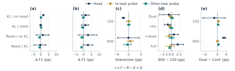
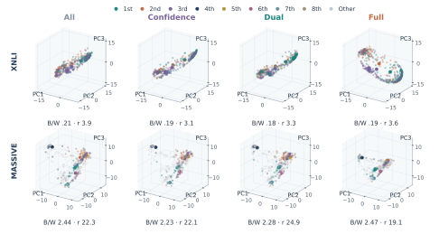
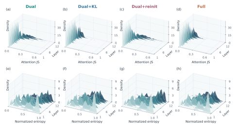

Research project · working manuscript
Selective Adaptation under Noisy Supervision:Separating Task Specialization from Representation Transfer
Better target predictions need not imply more transferable representations. We study where selection, attention anchoring, and head reinitialization direct adaptation.

+5.60± 4.91
Full vs All · XNLI native head
Qwen, staged 600 · paired Macro-F1 points (n=3)+0.46± 0.16
Dual vs Confidence · cross-task probes
Qwen, staged 600 · paired Macro-F1 points (n=3)78% lower
Dual+KL vs Dual · final-layer attention JS
XLM-R/XNLI, seed 17, 16 matched inputs01 / Component interactions
Selection, anchoring, and reset across budgets.
Factorial contrasts separate KL and head-reset effects from their interaction. Native-head, in-task, and cross-task readouts track how each intervention changes with the adaptation budget.

02 / Controlled interventions
Select support.
Anchor structure.
Redirect updates.
ui = min{Fc(ci), Fs(si)}
ℒFull = ℒselected CE + λ ℒattention KL
Dual retains 60% of target inputs using confidence and frozen semantic support. Full combines teacher-to-student attention KL with task-head reinitialization at adaptation onset. The teacher and gate stay fixed.
A selected-gradient decomposition separates support shift from pseudo-label error. Local propositions describe attention curvature and head-mediated feature updates, connecting each intervention to a distinct mechanism.
03 / Representation geometry
Class organization and retained variation.
Common projections make within-experiment changes visible; full-dimensional scatter, rank, and teacher similarity quantify distinct aspects of the representation. Each atlas retains its own backbone and task scope.


04 / Attention structure
Anchoring reshapes layerwise distributions.
Attention replay resolves where anchoring acts across depth. Teacher–student divergence and attention entropy distinguish reference proximity from concentration within the same matched inputs.

The manuscript connects these controlled mechanisms to four general classification tasks and original Korean aspect sentiment experiments. Prediction, transfer, geometry, and attention provide complementary evidence for selective adaptation.
Explore configurations and reproduction instructions